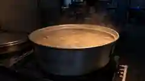

안성장터국밥의 국물은 열다섯 시간이 걸린다. 여덟 시간만 끓여도 팔린다는 걸 알면서 그렇게 한다. [승계 정보 — 몇 대째, 언제부터] 일곱 시간의 차이만큼 가스값과 사람의 시간이 더 들어가고, 사골과 양지머리를 함께 쓰는 만큼 원가가 올라간다.
매달 계산기를 두드리면서도 바꾸지 않은 건 신념 때문이 아니라 “손님이 먼저 안다”는 이유에서였다. 열 명 중 아홉은 모르는 차이를, 알아보는 한 명을 위해 지켜온 시간이다.

Q1 안성국밥이 언제부터 있었는지, 들으신 이야기가 있으신가요?
Q2 이 가게는 언제 시작됐고, 대표님은 몇 대째이신가요?
Q3 육수는 무엇으로 시작하시나요? 부위를 고르시는 기준이 있으신지.
사골은 뼈대고 양지는 살결이에요. 둘 다 있어야 국물이 서요.
사골만 쓰면 무겁긴 한데 텁텁해요. 목 뒤에 뭔가 남는 느낌. 양지머리는 결이 촘촘해서 오래 익혀도 안 풀어지고, 국물에 고기 냄새가 아니라 고기 맛을 남겨요. 이게 다릅니다.
Q4 “진한 맛”은 곧 “오래 끓인다”는 뜻일까요?
오래 끓이는 거랑 진한 거는 달라요. 세게 오래 끓이면 국물이 탁해지고 끝에 쓴맛이 올라와요. 그건 진한 게 아니라 상한 쪽에 가까운 거예요.
저희는 처음 세 시간만 불을 세게 씁니다. 그 다음부터는 국물 표면이 겨우 떨릴 정도로만 놔둬요. 끓는다기보다 그냥 뜨겁게 유지하는 거죠. 15시간을 목표로 잡은 게 아니라, 제대로 하면 그만큼 걸리는 거예요.
Q5 다 됐다는 걸 무엇으로 판단하세요?
국물을 한 숟갈 떠서 입술에 대보면 살짝 붙어요. 그게 나오면 그날 육수는 끝난 겁니다.
Q6 원가 부담이 클 텐데, 재료를 바꿔볼 생각은 안 하셨나요?
여덟 시간만 끓여도 팔려요. 손님 열 명 중 아홉은 모를 거예요.
원가요? 매달 계산기 두드려요. 안 두드리면 거짓말이죠. 바꿔볼까 생각한 적도 있어요. 근데 못 바꿔요. 손님이 먼저 알아요. 말은 안 하고 그냥 안 와요. 그게 제일 무섭습니다.
Q7 날씨나 계절에 따라 조리가 달라지나요?
Q8 예전 안성시장은 어떤 모습이었나요? 지금과 무엇이 달라졌나요?
Q9 지금 손님은 주로 어떤 분들인가요? 예전과 달라졌나요?
Q10 기본 맛이 변한 적이 있나요? 절대 안 변한 건 뭔가요?
변했죠. 안 변했다고 하면 그건 장사하는 사람 말이 아니에요.
제일 크게 변한 건 간이에요. 옛날엔 훨씬 짰어요. 냉장고가 흔치 않던 시절 버릇도 있고, 손님들이 다 몸 쓰고 오는 분들이었으니까. 다대기도 예전엔 처음부터 풀어서 나갔는데 지금은 따로 드려요.
안 바꾼 건 순서예요. 무 넣고 몇 분 뒤에 배추 넣고, 콩나물은 맨 마지막에. 이건 손대면 안 돼요. 재료가 같아도 순서 틀리면 다른 국이 나와요.
맛이 안 변한 집은 없어요. 변하는 걸 알고 어디까지 변할지를 정해놓은 집이 있을 뿐이지.
Q11 이 집이 오래 이어질 수 있었던 이유는 뭐라고 보시나요?
직업은 퇴근이 있잖아요. 근데 솥은 퇴근을 안 해요. 제가 자든 말든 계속 끓고 있어요.
어릴 때 새벽에 화장실 가려고 나오면 부엌에 불이 켜져 있었어요. 매일. 그땐 그게 그냥 우리 집 풍경인 줄 알았어요. 지금은 제가 그 불을 켭니다.
그만둬야 되나 싶었던 때요… (한참 뒤에) 있었어요. 근데 그때 매일 오시던 어르신이 한동안 안 보이시다가 다시 오셔서, 병원에 있었는데 여기 국밥 생각이 나서 걸어왔다고 하시더라고요. 그 말 듣고 나면 못 그만둬요. 저 하나 그만두는 게 아니게 되니까.
Q12 요즘 어려운 점은 뭔가요?
Q13 대표님께 “음식을 판다”는 건 어떤 의미인가요?
생계 맞아요. 그건 부정 안 해요. 이걸로 애들 키웠는데 아니라고 하면 거짓말이죠.
근데 생계만으로는 열다섯 시간이 설명이 안 돼요. 여덟 시간만 끓여도 팔려요. 손님 열 명 중 아홉은 모를 거예요. 그 한 명 때문에 하는 거예요. 그 한 명이 알아보고 다시 오면, 그날 하루가 그냥 하루가 아니게 되거든요.
저희는 한 끼를 파는 게 아니에요. 그날 그 사람 컨디션을 파는 거예요. 국밥 먹고 나가는 뒷모습을 보면 알아요, 잘 나갔는지 아닌지.
Q14 앞으로의 계획이 궁금합니다.
뚝배기가 놓이는 순간, 우리가 보는 건 한 그릇이다. 그 안에 일곱 시간의 차이가 들어 있다는 건 보이지 않는다.
열 명 중 아홉은 모른다. 알아보는 한 명이 되고 싶다면, 01 FOCUS의 순서대로 먹어 보시길.